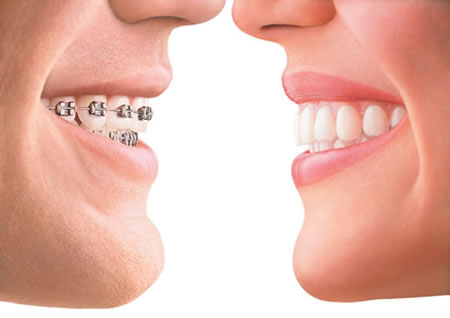

Invisalign® Braces in El Paso
Invisalign is an alternative to traditional orthodontic treatments.
Some call it invisible braces or clear braces. Traditional orthodontics uses metal braces to adjust the smile, which can take up to five years. Invisalign, however, uses a series of clear aligners that are custom-molded to fit the patient. The invisible and clear aligner is gradually repositioned to adjust the smile to the ideal location. Results, unlike metal orthodontics, frequently take six months to a year.
The advantages of Invisalign include:
- Almost undetectable clear adjusting aligner
- Easy to remove for eating, brushing, and flossing
- Can whiten teeth at the same time
- The last tray can be used as your retainer
Both teens and adults are ideal candidates for Invisalign. Each patient is created a specialized treatment plan for a range of issues, including overly crowded teeth, widely spaced teeth, overbites, underbites, and crossbites.
Custom Invisalign with Porcelain Veneers
In certain situations, a combination of Invisalign and porcelain veneers are ideal for patients looking for a more dramatic result. This hybrid takes advantage of the minimally invasive properties of Invisalign with the precision of veneers.
Instant Orthodontics by Da Vinci Veneers
Worried about crooked front teeth but apprehensive about the length of orthodontic treatment plans? You may be a good candidate for instant orthodontics done with Da Vinci porcelain veneers. When properly placed by our Redondo Beach dentists, porcelain veneers transform your worn teeth so much, it appears as though your teeth have been straightened with braces! Plus, fun you'll have smiling all the time.